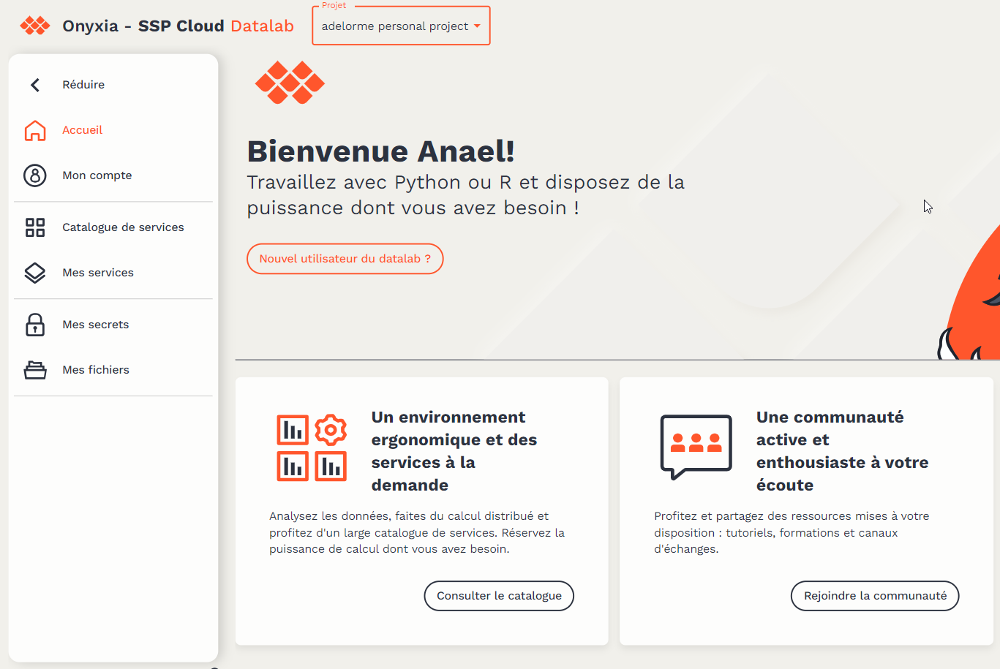
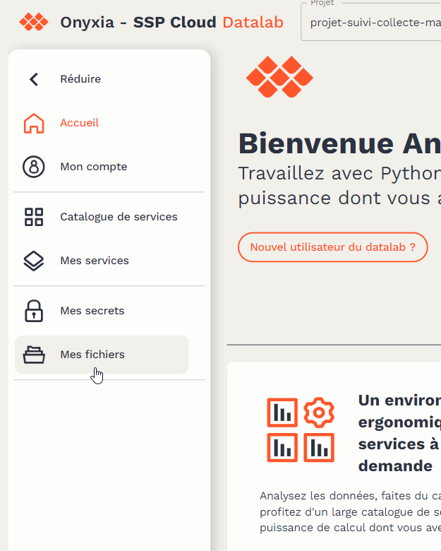
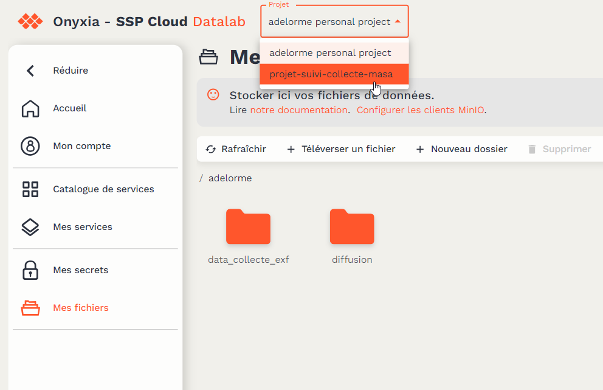

library(tidyverse)
library(arrow)
dossier <- read.csv2("dossier.csv")
annee_courante <- read.csv2("annee_courante.csv")
entreprise <- read.csv2("entreprise.csv")
gestion <- read.csv2("gestion.csv")
write_parquet(x = dossier, sink = "dossier.parquet")
annee_courante_light <- annee_courante %>%
select(Identifiant_dossier, NOM_DOSSIER, MAJC)
write_parquet(x = annee_courante_light, sink = ".parquet")
entreprise_light <- entreprise %>%
select(
Identifiant_dossier,
NOM_DOSSIER,
HEX_CODE_POSTAL_AFFI,
HEX_DEPSIEGE_AFFI,
HEX_REGSIEGE_AFFI
)
write_parquet(x = entreprise_light, sink = "entreprise.parquet")
gestion <- gestion %>%
select(Identifiant_dossier,
NOM_DOSSIER,
ACCEPT)
write_parquet(x = gestion, sink = "gestion.parquet")3 Données
Les données exportées de Capibara seront déposées dans l’espace de stockage du Datalab.
Utilisation de données non sensibles
“Conformément aux conditions d’utilisation, seules des données de type open data ou ne présentant aucune sensibilité peuvent être stockées sur le Datalab. Le fait qu’un fichier ait un statut de diffusion”privé” ne suffit pas à garantir une parfaite confidentialité.”
Les données devront donc être préparées avant d’être déposées sur le datalab.
3.1 Préparation des données
Toutes données permettant d’identifier une entreprise ou une personne seront supprimées avant de remonter les données. Le format préconisé est le parquet. Voici un exemple de code :
3.2 Dépôts des données sur le datalab
Quand les données sont prépararées, il faut les déposer sur le datalab. Le datalab offre une fonctionnalité de stockage des données (s3). Pour y accéder, il faut aller sur le datalab :

Puis on choisit Mes fichiers dans le menu de gauche :

Là on arrive par défaut sur son lieu de stockage individuel. Pour le site de suivi de la collecte, nous proposons d’utiliser un répertoire (un bucket en langage s3) partagé. Pour cela il faut choisir en haut le projet projet_suivi_collecte_masa :

Il ne reste plus qu’à créer un répertoire pour son site de collecte :

En allant dans ce répertoire, il suffit de déposer le(s) fichier(s) parquet par glisser/déposer :

Mise à jour des données
Régulièrement (tous les jours, toutes les semaines ?), le responsable d’enquête mettra à jour les données. Pour cela il refera les mêmes étapes que précédemment : export de capibara, préparation des données, export au format parquet, téléversement dans le bucket partagé du datalab.